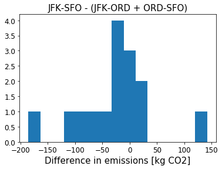
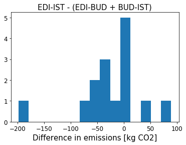

Stopover vs flyby
The difference between direct and indirect flights
I wanted to test the effect on CO2 emissions of the aircraft
landing and taking off again, without actually increasing the distance of
the trip. To achieve this, I identified routes where the great circle (GC)
flightpath crosses exactly inside the boundary of another airport:
- ZRH to PVG, which flies directly over PRG after 512 of 9051 total km
- SOU to EDI, which flies directly over MAN after 275 of 572 total km
- EDI to IST, which flies directly over BUD after 1816 of 2863 total km
- JFK to SFO, which flies almost directly over ORD after 1191 of 4162 total km
- EWR to SVO, which flies directly over KEF after 4186 of 7515 total km
I compared the amount of CO2 generated by the direct flyby route with
the sum of the amounts from the two legs with a stopover at the intermediate airport.
The first surprise was that for around a third of the calculators, there is no
significant difference between the stopover and flyby routes for all five cases
considered. (Significant, because most calculators round results to the nearest 1 or 10 kg
CO2, and so results can be consistent without being exactly the same.) This
probably means that these calculators do not take into account the number of take-offs and
landings specifically, rather just the GC distance of the trip.
The second surprise was that for those calculators which did report a significant difference
in the amount of CO2 emissions for stopover vs flyby routes, not only do they not
agree on the size of the difference in absolute terms (not unexpected, since they also don't
agree on total emissions), but they actually don't agree if a particular stopover route causes
more or less emissions than its flyby equivalent! See plots below for a couple of examples.


What could be going on here? There are many different effects to take into account, which
will affect flights of different length in different ways:
- Extra distance
Even without changing the GC distance, a stopover can mean that the plane flies further due
to diversions, holding patterns etc.
Most significant for shorter routes.
Increases the amount of emissions on stopover routes.
- Extra landing and take-off
Taking the plane down and up again for a stopover requires more fuel than for a flyby route.
Most significant for shorter routes.
Increases the amount of emissions on stopover routes.
- Altitude changes
A stopover means more of the flight is in denser atmosphere. Flying at high altitude requires
less fuel. However, if using an RF factor, less of the emissions occur in the high atmosphere
for stopover routes.
Most significant for shorter routes.
Could go either way.
- The opportunity to change planes
Splitting a longer flight into two shorter legs might mean two turboprop flights are possible,
which could be more fuel efficient. On the other hand, long haul aircraft tend to be newer
and more fuel efficient.
Significant on all routes.
Could go either way.
- The opportunity to refuel
On stopover routes, the plane doesn’t have to carry fuel for the second half of the trip during
the first half, which require extra fuel.
Most significant for longer routes.
Decreases the amount of emissions on stopover routes.
We really get to the heart of the CO2 emission calculation with these questions,
so there's lots of things to think about.
Calculators accessed 2019-10-06.